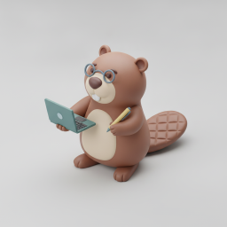
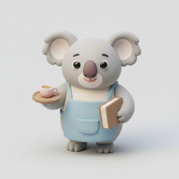
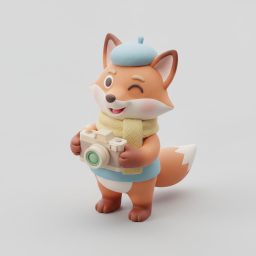
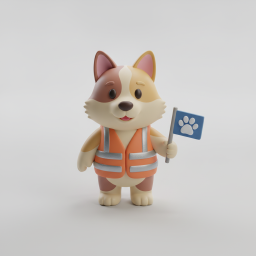
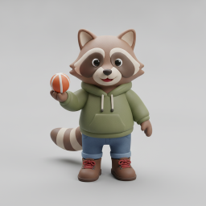
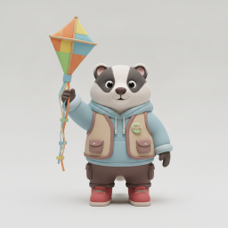
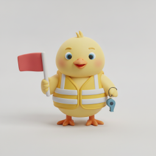
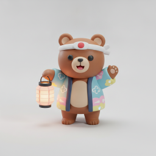
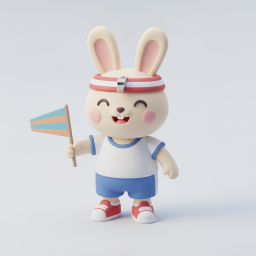

会長
本部役員
PTAの代表。会を束ね、学校・地域との“顔”になる役割。
こんな人に：人前で話す・意見をまとめるのが苦でない人。前年に委員や係を経験していると動きやすい（必須ではありません）。
主なお仕事
- 総会・運営委員会（年3回）の主宰
- 本部役員会（月1程度・参加任意）
- 学校運営委員会（年6回）に出席
- 5ブロック会など対外の窓口対応
リーダー対外調整
経堂小PTAには全24の役割があります。それぞれを「こんな人に向いている」「何をする」「いつ・どれくらい関わる」まで噛み砕いて紹介します。気になる切り口で絞り込んでみてください。
PTA全体の運営を担う中心メンバー。

通年で活動する委員会。


地域・町会・警察と連携し、子どもの校外の安全を守る。




盆踊り・運動会など、その時期だけの行事を運営。


スキルや学年を活かす、運営まわりの係。